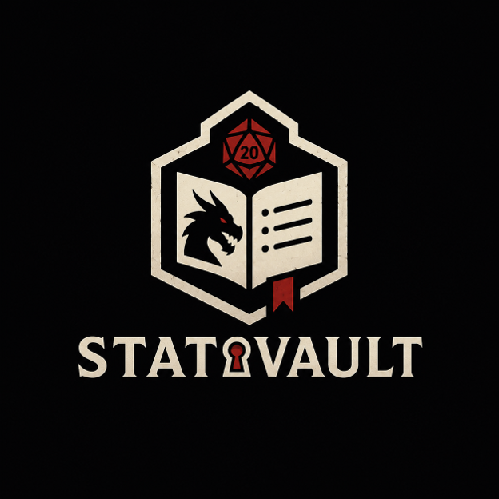

Saved stat blocks
Store a monster's AC, HP, attacks, and abilities once, then load it the moment it enters the fight.

Stat VaultEvery stat, preset, and encounter table in one place, so you can run the session instead of hunting through tabs.
Browse PresetsStat Vault organizes the information a Game Master needs during a Dungeons & Dragons session (and similar tabletop games) into one tool. Instead of juggling five browser tabs, three bookmarks, and a character sheet, you keep your stat blocks, dice presets, and encounter tables saved and ready to pull up at the table.
Store a monster's AC, HP, attacks, and abilities once, then load it the moment it enters the fight.
Save the rolls you reuse (random loot, wild magic, weather) and roll them against a table in one click.
Group several stat blocks into a single encounter so the whole fight is ready before the party walks in.